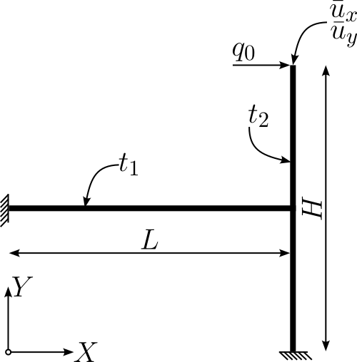
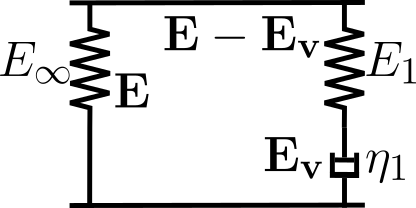

3. Viscoelastic Shell formulation using HHJ Method#
from ngsolve import *
from ngsolve.webgui import Draw
from netgen.occ import *
import numpy as np
import matplotlib.pyplot as plt
SetNumThreads(15)
4. Model Problem#
4.1. Geometrical Properties:#

L = 50
H = 50
t_1 = 0.5
t_2 = 5
Force = 1e-2
4.2. Material Parameters#

For the modeling of the viscoelastic behavior, we are using the generalized Maxwell Element as illustrated above. We assume an additive decomposition of the strains in terms of the Green strain tensor \(\mathbf{E}\).
The material is assumed incompressible. The viscoelastic model parameters are defined using a Prony Series with parameters \(g_1\) and \(\tau_1\) and the following relationships $\( E_1 = \frac{g_1}{1-g_1} E_{\infty},\\ \eta_1 = \tau_1 E_1. \)$
E = 3 # Young's Modulus
nu = 0.5 # Poisson Ratio
lam_material = E*nu/(1-nu**2) # 1st Lame Constant with Plane Stress Consumptions
mu_inf = 0.5 / (1+nu) * E # 2nd Lame Constant
g1 = 0.5 # Prony Parameter
tau1 = 0.5 # Prony Parameter
E1 = g1*E/(1-g1) # Young's Modulus Viscoelastic Part
lam_1 = E1*0.5/(1-0.5**2) # 1st Lame Constant with Plane Stress Consumptions Viscoelastic Part
mu_1 = g1*mu_inf/(1-g1) # 2nd Lame Constant Viscoelastic PArt
eta1 = tau1*E1 # Dashpoint Element
mat_horizontal = "mat_horizontal"
mat_vertical = "mat_vertical"
maxh = L/5
order = 3
4.3. Build Geometry by using OCC#
wire1 … horizontal part, wire2 … vertical part
pnt1 = Pnt(0,0,0)
pnt2 = Pnt(L,0, 0)
pnt3 = Pnt(L,H/2,0)
pnt4 = Pnt(L,-H/2,0)
wire1 = Wire([Segment(pnt1,pnt2)
])
wire2 = Wire([Segment(pnt2,pnt3),
Segment(pnt4,pnt2)
])
face1 = wire1.Extrude((0,0,L))
face2 = wire2.Extrude((0,0,L))
# Name Edges for Boundary Conditions
face1.edges[0].name = "clamped_left"
face2.edges[1].name = "free"
face2.edges[4].name = "clamped_bottom"
# Mark Edges for refinement
face1.edges[0].hpref = 1
face2.edges[1].hpref = 1
face2.edges[4].hpref = 1
face2.edges[5].hpref = 1
for i in range (0,len(face1.vertices)):
face1.vertices[i].hpref = 1
for i in range (0,len(face2.vertices)):
face2.vertices[i].hpref = 1
# Name Faces in order to assign thickness
face1.faces.name = mat_horizontal
face2.faces[0].name = mat_vertical
face2.faces[1].name = mat_vertical
geometry1 = Glue([face1])
geometry2 = Glue([face2])
geometry = Glue([geometry1,geometry2])
Draw(geometry, settings={"camera": {"transformations": [{"type": "rotateY", "angle": 25},{"type": "rotateX", "angle": 25}]}})
BaseWebGuiScene
4.4. Mesh the above Geometry using RefineHP#
geo = OCCGeometry(geometry)
ngmesh = geo.GenerateMesh(maxh=maxh)
mesh = Mesh(ngmesh)
mesh.RefineHP(levels=2,factor=0.75)
mesh.Curve(order)
thickness_fun = mesh.BoundaryCF({mat_horizontal: t_1, mat_vertical: t_2}) # Assign Thickness to associated area
Draw(thickness_fun,mesh,'thickness', settings={"camera": {"transformations": [{"type": "rotateY", "angle": 25},{"type": "rotateX", "angle": 25}]}})
BaseWebGuiScene
4.5. FE Spaces#
Without going into the theory of the HHJ-shell method, we will refer to the various works by Schöberl, Neunteufel, Pechstein, et al.
For the analysis of the problem, we are using the following variables in the associated FE Space:
displacement
\(u \in \mathrm{H}^1(\Omega)^3\)
moment
\(\mathbf{m} \in \mathbf{H}(\mathrm{div}\ \mathrm{div})\)
hybridization vector
\(\boldsymbol{hyb} \in \mathbf{H}(\mathrm{div})\)
elastic membrane strain tensor
\(\mathbf{\varepsilon} \in \mathbf{H}(\mathrm{curl} \ \mathrm{curl})\)
viscoelastic membrane strain tensor
\(\mathbf{\varepsilon}_v \in \mathbf{H}(\mathrm{curl} \ \mathrm{curl})\)
elastic curvature tensor
\(\mathbf{\kappa} \in \mathbf{H}(\mathrm{curl} \ \mathrm{curl})\)
viscoelastic curvature tensor
\(\mathbf{\kappa}_v \in \mathbf{H}(\mathrm{curl} \ \mathrm{curl})\)
auxiliary variable (helps to reduce mebrane locking)
\(\mathbf{R} \in \mathbf{H}(\mathrm{curl} \ \mathrm{curl})\)
Green’s strain tensor is calculated by numerical integration over the thickness by \( \mathbf{E} = \mathbf{\varepsilon} + \zeta \mathbf{\kappa}\) and \( \mathbf{E}_v = \mathbf{\varepsilon}_v + \zeta \mathbf{\kappa}_v\).
Additionally, the boundary conditions are defined as dirichlet conditions in the displacements as well as dirichlet conditions in the hybridization space.
bbc_clamp = "clamped_left|clamped_bottom"
bbc_x = "clamped_left|clamped_bottom"
bbc_y = "clamped_left|clamped_bottom"
bbc_z = "clamped_left|clamped_bottom"
fes_mom = HDivDivSurface(mesh, order=order-1, discontinuous=True)
fes_u = VectorH1(mesh, order=order, dirichletx_bbnd=bbc_x, dirichlety_bbnd=bbc_y, dirichletz_bbnd=bbc_z)
fes_hyb = HDivSurface(mesh, order=order-1, orderinner=0, dirichlet_bbnd=bbc_clamp)
fes_curlcurl = HCurlCurl(mesh, order=order, discontinuous=True)
fes = fes_u*fes_hyb*fes_curlcurl*fes_curlcurl*fes_curlcurl*fes_mom*fes_curlcurl*fes_curlcurl
solution = GridFunction(fes, name="solution") # Solution Function
u = solution.components[0]
solution_old = GridFunction(fes) # Solution Function of previous time step
print("Degrees of Freedom: ", sum(fes.FreeDofs(True)))
Degrees of Freedom: 4989
4.6. Special Functions and useful quantities#
Nsurf = specialcf.normal(mesh.dim) # Surface normal N
t = specialcf.tangential(mesh.dim) # Tangential Vector
nel = Cross(Nsurf, t) # In-plane edge normal
A = Id(mesh.dim) - OuterProduct(Nsurf,Nsurf) # First metric tensor
cfnphys = Normalize(Cof(A+Grad(u))*Nsurf)
gradN = specialcf.Weingarten(3) # Weingarten Tensor
fesVF = VectorFacetSurface(mesh, order=order)
averednv = GridFunction(fesVF) # averaged normal vector
averednv_start = GridFunction(fesVF) # averaged initial normal vector
# Computation of averaged Normal Vector
n_ = fesVF.TrialFunction()
n_.Reshape((3,))
bfF = BilinearForm(fesVF, symmetric=True)
bfF += Variation( (0.5*n_*n_ - (cfnphys)*n_)*ds(element_boundary=True))
def ComputeAveredNV(averednv):
rf = averednv.vec.CreateVector()
bfF.Apply(averednv.vec, rf)
bfF.AssembleLinearization(averednv.vec)
invF = bfF.mat.Inverse(fesVF.FreeDofs())
averednv.vec.data -= invF*rf
ComputeAveredNV(averednv)
ComputeAveredNV(averednv_start)
cfn = Normalize(CoefficientFunction( averednv.components ))
cfnR = Normalize(CoefficientFunction( averednv_start.components )) # nR
def SolveCondense(a, res, solver, w):
if a.condense:
res.data += a.harmonic_extension_trans * res
w.data = solver * res
w.data += a.harmonic_extension * w
w.data += a.inner_solve * res
else:
w.data = solver * res
def SolveViscoTrapezoidalRule(a,b,X,X_0):
rel_err = 1e-8
abs_err = 1e-8
max_it = 25
freedofs = a.space.FreeDofs()
freedofsb = b.space.FreeDofs()
freedofs_c = a.space.FreeDofs(a.condense)
res = X.vec.CreateVector()
w = X_0.vec.CreateVector()
res0 = X_0.vec.CreateVector()
b.Apply(X_0.vec,res0)
res0[~freedofsb] = 0.
a.Apply(X.vec, res)
res[~freedofs] = 0.
init_norm_res = Norm(res)
print(f'\t Initial Residuum = {init_norm_res}')
j = 1
while j <= max_it:
a.AssembleLinearization(X.vec)
inv = a.mat.Inverse(freedofs_c)
SolveCondense(a, res, inv, w)
X.vec.data -= w
a.Apply(X.vec, res)
res[~freedofs] = 0.
res.data -= res0
normres = Norm(res)
if normres < rel_err * init_norm_res or normres < abs_err:
print(f'\t Newton Step {j}: Residuum = {normres}')
return j,0
j+=1
return j,Norm(res)
4.7. Test and Trial Functions#
u_, hyb_, eps_, R_, kappa_, mom_, eps_vi_, kappa_vi_ = fes.TrialFunction()[:8]
hyb_, eps_, R_, kappa_, mom_, eps_vi_, kappa_vi_ = hyb_.Trace(), eps_.Trace(), R_.Operator("dualbnd"), kappa_.Trace(), mom_.Trace(), eps_vi_.Trace(), kappa_vi_.Trace()
deps_vi, dkappa_vi = fes.TestFunction()[6:]
deps_vi, dkappa_vi = deps_vi.Trace(), dkappa_vi.Trace()
Fsurf_ = grad(u_).Trace() + A
Csurf_ = Fsurf_.trans*Fsurf_
epssurf_ = 0.5*(Csurf_ - A)
nphys = Normalize(Cof(Fsurf_)*Nsurf) # normal of deformed surface
tphys = Normalize(Fsurf_*t)
nelphys = Cross(nphys,tphys) # in-plane edge normal of deformed surface
Hn_ = CoefficientFunction( (u_.Operator("hesseboundary").trans*nphys), dims=(3,3) ) # Hessian of the displacement
pnaverage = Normalize( cfn - (tphys*cfn)*tphys )
4.8. BilinearForm#
Recalling the variational formulation in the form $\( \delta\Psi+\frac{\partial\phi}{\partial\dot{\mathbf{E}_v}}\colon\delta\mathbf{E}_v+\delta W_{\text{ext}}=0, \)\( and using the dissipation function as \)\( \phi = \frac{2}{3}\frac{1}{2}\eta_1{\left|\dot{\mathbf{E}_v}\right|}^2, \)\( the second term can be rewritten as \)\( \frac{\partial\phi}{\partial\dot{\mathbf{E}_v}}\colon\delta\mathbf{E}_v=\frac{2}{3}\eta_1\dot{\mathbf{E}_v}\colon\delta\mathbf{E}_v. \)\( Starting at \)t_0\(, where the solution is known, the next time step \)t_0+\Delta t\( can be determined by solving \)\( \int_{t_0}^{t_0+\Delta t} \left(\frac{2}{3}\eta_1\dot{\mathbf{E}_v}\colon\delta\mathbf{E}_v d\tau\right)=\int_{t_0}^{t_0+\Delta t} \left(-\delta\Psi-\delta W_{\text{ext}}\right)d\tau. \)\( First of all, the result of the left hand side of the above equation is to be determined. \)\( \frac{2}{3}\eta_1 \int_{t_0}^{t_0+\Delta t} \left(\dot{\mathbf{E}_v}\colon\delta\mathbf{E}_v d\tau\right)=\frac{2}{3}\eta_1 \left({\mathbf{E}_v}\left(t_0+\Delta t\right)-{\mathbf{E}_v}\left(t_0\right)\right)\colon\delta\mathbf{E}_v \)\( This result leads to \)\( \frac{2}{3}\eta_1 \left({\mathbf{E}_v}\left(t_0+\Delta t\right)-{\mathbf{E}_v}\left(t_0\right)\right)\colon\delta\mathbf{E}_v=\underbrace{\int_{t_0}^{t_0+\Delta t} \left(-\delta\Psi-\delta W_{\text{ext}}\right)d\tau}_{\text{Time Integration Method}}, \)$ where the time integration method has to be chosen.
Using the trapezoidal rule, the right hand side from above gives $\( -\Delta t\left(\frac{1}{2}\left(\delta\Psi \big|_{t_0+\Delta t}+\delta\Psi \big|_{t_0}\right) + \frac{1}{2}\left(\delta W_{\text{ext}} \big|_{t_0+\Delta t}+ \delta W_{\text{ext}} \big|_{t_0}\right)\right). \)\( For the fininte element analysis, the equation is used in the following form with two bilinear forms \)a\( and \)b\( \)\( \underbrace{\frac{2}{3}\eta_1 \left({\mathbf{E}_v}\left(t_0+\Delta t\right)-{\mathbf{E}_v}\left(t_0\right)\right)\colon\delta\mathbf{E}_v+\frac{\Delta t}{2}\left(\delta\Psi \big|_{t_0+\Delta t}+\delta W_{\text{ext}} \big|_{t_0+\Delta t}\right)}_{=:a} = -\underbrace{\frac{\Delta t}{2}\left(\delta\Psi \big|_{t_0}+\delta W_{\text{ext}} \big|_{t_0}\right)}_{=:b}. \)$
par = Parameter(0) # Load Parameter used for load stepping
par0 = Parameter(0) # Previous Load Parameter
DeltaT = Parameter(0) # Time Step
gausspoints = [(-np.sqrt(3/7+2/7*np.sqrt(6/5)), (18-np.sqrt(30))/36 ),
(-np.sqrt(3/7-2/7*np.sqrt(6/5)), (18+np.sqrt(30))/36 ),
(np.sqrt(3/7-2/7*np.sqrt(6/5)), (18+np.sqrt(30))/36 ),
(np.sqrt(3/7+2/7*np.sqrt(6/5)), (18-np.sqrt(30))/36 ) ] # Used for numerical integration in thickness directions
def BuildBF(rhs = False):
fac = -1 if rhs else 1
bf = BilinearForm(fes, symmetric=True, condense=True, printelmat=False)
for (zi, wi) in gausspoints: # thickness Integration
zeta = thickness_fun/2*zi
weightdet = wi*thickness_fun/2
E_ = eps_ + zeta*kappa_
E_vi_ = eps_vi_ + zeta*kappa_vi_
delE_ = E_-E_vi_
FB = A
III_Lambda = (Cof(FB)*Nsurf)*Nsurf
SVK = mu_inf*InnerProduct(E_,E_)+0.5*lam_material*Trace(E_)**2
SVK_VI = mu_1*InnerProduct(delE_,delE_)+0.5*lam_1*Trace(delE_)**2
bf += Variation(fac*(SVK)*weightdet*III_Lambda*ds).Compile()
bf += Variation(fac*(SVK_VI)*weightdet*III_Lambda*ds).Compile()
if not rhs:
Eps_vi_last = solution_old.components[6]
kappa_vi_last = solution_old.components[7]
E_vi_last = Eps_vi_last+zeta*kappa_vi_last
Eps_vi_dot = (E_vi_-E_vi_last)
bf += SymbolicBFI(2/DeltaT*2/3*eta1*(InnerProduct(Eps_vi_dot,deps_vi+zeta*dkappa_vi)+
InnerProduct(Eps_vi_dot,A)*
InnerProduct(deps_vi+zeta*dkappa_vi,A))*weightdet*III_Lambda,BND)
bf += Variation( fac*(-InnerProduct(mom_, kappa_ + Hn_ + (1-nphys*Nsurf)*gradN))*ds ).Compile()
bf += Variation( fac*InnerProduct(eps_-epssurf_, R_)*ds(element_vb=BND ) )
bf += Variation( fac*InnerProduct(eps_-epssurf_, R_)*ds(element_vb=VOL ) )
bf += Variation( fac*(acos(nel*cfnR)-acos(nelphys*pnaverage)-hyb_*nel)*(mom_*nel)*nel*ds(element_boundary=True ) ).Compile()
if rhs:
bf += Variation(-fac*par0*Force*t_2*u_[0]*ds(definedon=mesh.BBoundaries("free"))).Compile()
else:
bf += Variation(-fac*par*Force*t_2*u_[0]*ds(definedon=mesh.BBoundaries("free"))).Compile()
return bf
bfa = BuildBF(rhs=False)
bfb = BuildBF(rhs=True)
solution.vec[:] = 0
t1 = 5 # Time period
nsteps_load = 5 # number of load steps
nsteps_relaxation = 25 # number of relaxation steps
time_vec = np.append(np.linspace(0,1e-5,nsteps_load,endpoint=False),np.linspace(1e-5,t1,nsteps_relaxation))
load_vec = np.append(np.linspace(0,1,nsteps_load,endpoint=False),np.linspace(1,1,nsteps_relaxation))
disp_x = []
time_sol = []
disp_y = []
disp_x += [0]
time_sol += [0]
disp_y += [0]
solution.vec[:] = 0
for i in range(len(time_vec))[1:]:
print(f'{np.round(time_vec[i],3)} seconds, total time: {t1} seconds')
solution_old.vec.data = solution.vec
par.Set(load_vec[i])
par0.Set(load_vec[i-1])
DeltaT.Set(time_vec[i]-time_vec[i-1])
with TaskManager():
idx, res = SolveViscoTrapezoidalRule(bfa,bfb,solution,solution_old)
if res != 0:
print(f'\t Newton did not converge! Residuum = {res}')
break
rhs = solution.vec.CreateVector()
bfa.Apply(solution.vec, rhs)
int0 = Integrate(1, mesh, definedon=mesh.BBoundaries("free"))
u_sol = Integrate(solution.components[0], mesh, definedon=mesh.BBoundaries("free"))
u_x = 1/int0 * u_sol[0]
u_y = 1/int0 * u_sol[1]
time_sol += [time_vec[i]]
disp_x += [u_x]
disp_y += [u_y]
Redraw()
0.0 seconds, total time: 5 seconds
Initial Residuum = 0.18283846562987913
Newton Step 4: Residuum = 9.613622004225363e-11
0.0 seconds, total time: 5 seconds
Initial Residuum = 2.7308183506030095
Newton Step 4: Residuum = 1.2100974050095214e-11
0.0 seconds, total time: 5 seconds
Initial Residuum = 5.394898164939767
Newton Step 3: Residuum = 3.39935646824724e-08
0.0 seconds, total time: 5 seconds
Initial Residuum = 7.969443307950139
Newton Step 3: Residuum = 2.3316472822128958e-08
0.0 seconds, total time: 5 seconds
Initial Residuum = 10.42767602400301
Newton Step 3: Residuum = 1.6608197336892057e-08
0.208 seconds, total time: 5 seconds
Initial Residuum = 12.752706669639814
Newton Step 4: Residuum = 3.1688539557318255e-11
0.417 seconds, total time: 5 seconds
Initial Residuum = 10.084436382162
Newton Step 4: Residuum = 3.298624981935137e-11
0.625 seconds, total time: 5 seconds
Initial Residuum = 7.955637591997203
Newton Step 4: Residuum = 2.767537613672256e-11
0.833 seconds, total time: 5 seconds
Initial Residuum = 6.266032890456912
Newton Step 4: Residuum = 3.164675163369376e-11
1.042 seconds, total time: 5 seconds
Initial Residuum = 4.929740574780688
Newton Step 4: Residuum = 3.3889461186045196e-11
1.25 seconds, total time: 5 seconds
Initial Residuum = 3.8754412355306025
Newton Step 4: Residuum = 2.935955710016503e-11
1.458 seconds, total time: 5 seconds
Initial Residuum = 3.045025161455125
---------------------------------------------------------------------------
KeyboardInterrupt Traceback (most recent call last)
Cell In[12], line 16
13 DeltaT.Set(time_vec[i]-time_vec[i-1])
15 with TaskManager():
---> 16 idx, res = SolveViscoTrapezoidalRule(bfa,bfb,solution,solution_old)
17 if res != 0:
18 print(f'\t Newton did not converge! Residuum = {res}')
Cell In[8], line 66, in SolveViscoTrapezoidalRule(a, b, X, X_0)
64 j = 1
65 while j <= max_it:
---> 66 a.AssembleLinearization(X.vec)
67 inv = a.mat.Inverse(freedofs_c)
69 SolveCondense(a, res, inv, w)
KeyboardInterrupt:
fig, ax = plt.subplots(1,1, figsize=(8,8))
fig.suptitle("Displacements of the free end", size=25)
ax.plot(time_sol, disp_x, color = 'red')
ax.set_xlabel(r'Time', size=20)
ax.set_ylabel(r'$\bar{u}_x$',color = 'red', size=20)
ax.grid(color='red', linestyle='dotted')
ax.tick_params(axis='y', labelcolor='red')
ax2 = ax.twinx()
ax2.plot(time_sol,disp_y,color='blue',label='Displacement y')
ax2.set_ylabel(r'$\bar{u}_y$',color = 'blue', size=20)
ax2.tick_params(axis='y', labelcolor='blue')
ax2.grid(color='blue', linestyle="dotted")
fig.tight_layout()
print('Norm(displacement):')
Draw(solution.components[0][0], mesh, "displacement", deformation=solution.components[0], settings={"camera": {"transformations": [{"type": "rotateY", "angle": 25},{"type": "rotateX", "angle": 25}]}})
print('Norm(eps_v):')
Draw(Norm(solution.components[6]), mesh, "viscoelastic strains", deformation=solution.components[0], settings={"camera": {"transformations": [{"type": "rotateY", "angle": 25},{"type": "rotateX", "angle": 25}]}})
print('Norm(kappa_v):')
Draw(Norm(solution.components[4]), mesh, "viscoelastic curvature", deformation=solution.components[0], autoscale=False, min=0, max=0.05,settings={"camera": {"transformations": [{"type": "rotateY", "angle": 25},{"type": "rotateX", "angle": 25}]}})